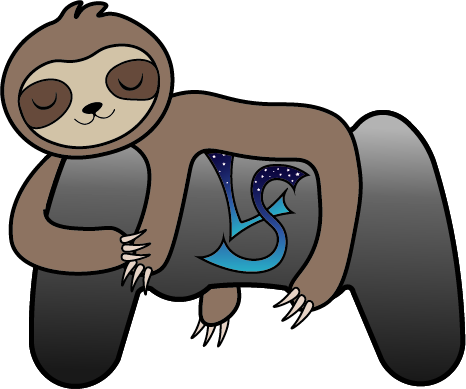
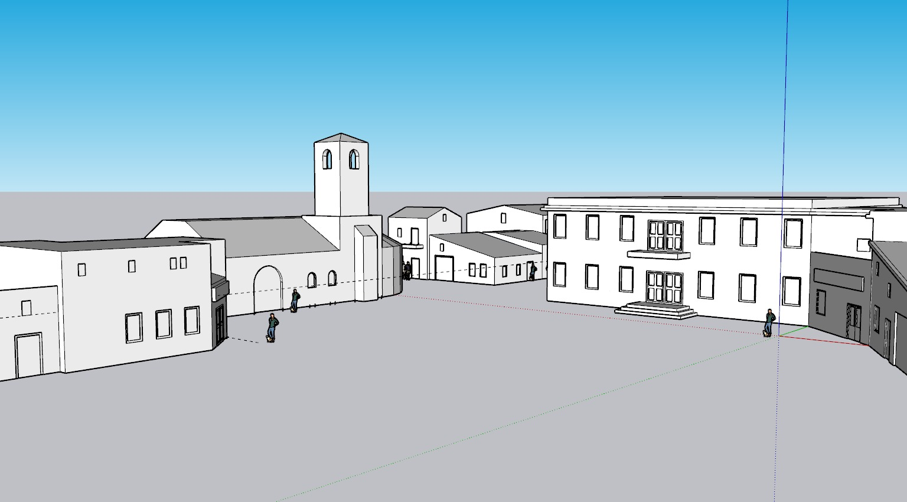
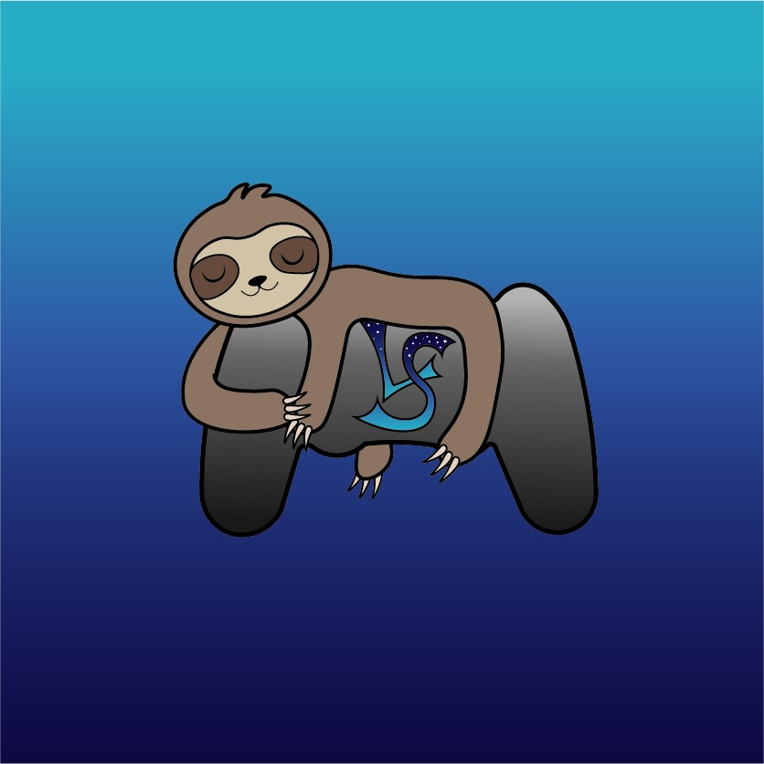

LAZYSOFT — Estudio de videojuegos

El secreto de Monteviejo
Aventura narrativa en 3D. Ya puedes probar la versión en desarrollo.

Estamos montando el tráiler.
Cuando esté listo lo verás aquí y en nuestro canal de YouTube.
Tráiler y versión jugable
La versión en desarrollo está en itch.io. Es temprana y la vamos actualizando según avanza el proyecto.
Jugar en itch.ioControles
- WASD
- Moverse
- Ratón
- Girar la cámara
- Espacio
- Avanzar diálogo
- E
- Interactuar
- Clic izquierdo
- Elegir respuesta en los diálogos
¿Para quién hacemos este juego?
Antonio trabaja para la consejería y llega a Monteviejo en septiembre para pasar dos meses haciendo un informe. Se encuentra un pueblo partido en dos bandos desde hace años, vecinos que se vigilan desde la ventana y una historia de la que nadie habla en voz alta. Tú decides con quién hablar, qué preguntar y a quién creer.
«Elige bien tu bando, hijo».
A quién va dirigido
Jugadores de aventuras narrativas
Gente que juega por la historia y los personajes más que por la acción. No hay combates: se avanza hablando y prestando atención.
Quien disfruta atando cabos
Cada vecino cuenta su versión. Hay que contrastar lo que dicen con documentos, fotos y objetos para reconstruir lo que pasó.
Quien conoce la vida de pueblo
La plaza, los dos bares de los gemelos, la vecina que lo ve todo. Situaciones que reconoce cualquiera que haya pasado veranos en un pueblo.
- Género
- Aventura narrativa de investigación
- Perspectiva
- Tercera persona en exteriores / Primera persona en interiores
- Plataforma
- PC, con teclado y ratón
- Motor
- Unity
- Idioma
- Español
- Edad orientativa
- +16, por los temas que trata
Juegos parecidos
Una selección provisional de las referencias que manejamos en el equipo.
Arte &
desarrollo.
Bocetos, diseños de personajes y estudios de escenarios de El secreto de Monteviejo.
Compartiremos nuevas piezas conforme avance el desarrollo: escenarios, personajes y pruebas en el motor.
Equipo de LazySoft.
Somos un equipo de seis estudiantes que desarrolla el videojuego "El secreto de Monteviejo" como proyecto universitario.

LazySoft,equipo de desarrollo
La trayectoria
de LazySoft.
Los juegos y proyectos que hemos desarrollado como equipo.
Próximamente compartiremos aquí nuestros proyectos anteriores.
Contacto
Para comentarnos algo del juego, proponer una colaboración o saludar al equipo. También puedes escribirnos directamente:
lazysoftstudio@gmail.com